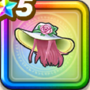

渚のロザリーハット
攻略班 9.5点 / 怪人系への耐性+5%ゾンビ系への耐性+5%【守り人】斬撃・体技耐性+2%怪人系への耐性+5%ゾンビ系への耐性+5%スキルの体技ダメージ+7%とくぎHP回復効果+5%【大神官】スキルHP回復効果+2%
くわしい特徴
【レベル別習得スキル】 Lv1怪人系への耐性+5% Lv8ゾンビ系への耐性+5% Lv10スキルの体技ダメージ+7% Lv12とくぎHP回復効果+5% Lv15【大神官】スキルHP回復効果+2% Lv18【守り人】斬撃・体技耐性+2% Lv20怪人系への耐性+5% Lv23すばやさ+10 Lv25ゾンビ系への耐性+5% 【限界突破スキル】 1凸かいふく魔力+12 2凸さいだいMP+10 3凸さいだいHP+10 4凸守備力+12